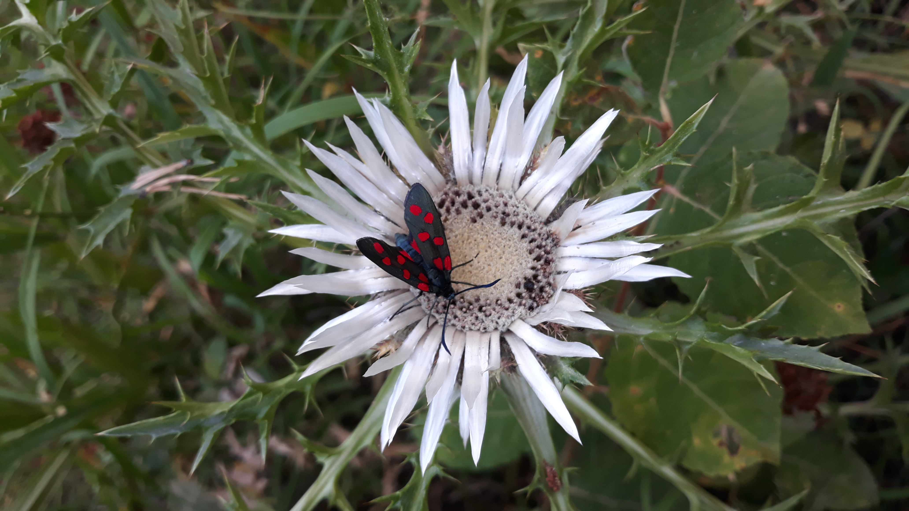

Photographie
Une sélection de photographies réalisées au fil de mes découvertes et de mes projets personnels.




Passionné par la programmation, la cybersécurité et le développement web. À la recherche d'un stage dans le domaine du numérique.
Titulaire d'un Baccalauréat Général (spécialités NSI & SI) obtenu avec mention Assez Bien, je poursuis actuellement mes études en BTS SIO (Services Informatiques aux Organisations), option SLAM au Pôle supérieur Saint-Denis à Annonay.
Curieux et rigoureux, j'aime comprendre le fonctionnement sous-jacent des systèmes, concevoir des algorithmes et relever des défis techniques comme l'organisation de CTF (Capture The Flag).
HTML5, CSS3, JavaScript
Python (avancé), notions en Lua, C++, C#
Notions en SQL, bases de données, algorithmique
Configuration réseau de base, gestion de projet, architecture informatique
2025 - Lycée Saint-Denis
Conception et organisation complète d'une compétition informatique au sein du lycée.
2026 - Pôle Supérieur Saint-Denis
Développement d'applications et gestion de bases de données dans le cadre de la formation BTS SIO.
Une sélection de photographies réalisées au fil de mes découvertes et de mes projets personnels.

Méthodes et normes de qualité, conditionnement, nettoyage et entretien des équipements de production.
Récolte en plein champ selon la maturité, tri, sélection et conditionnement des feuilles.
titouan.geneve.dev@gmail.com
06 36 05 81 66
Avenue de la Gare, 07100 Annonay